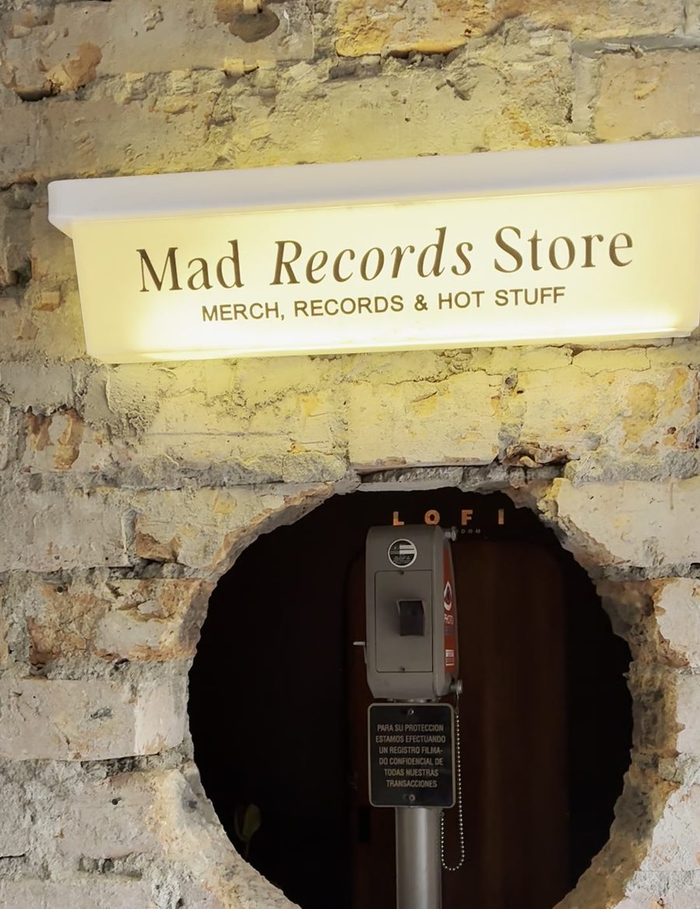
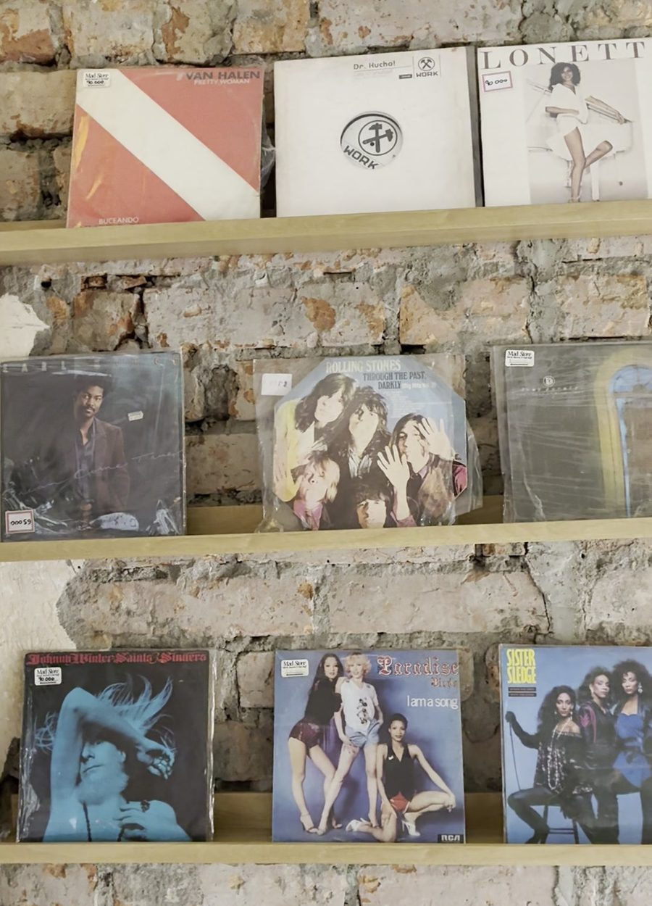

The art of listening. Vinyl sounds.
Bar · Radio · Records · GaleríaUna fachada de madera, una camiseta en la vitrina y música saliendo hasta la calle. Ya llegaste.
El pasillo del café, la vitrina naranja con las gorras y los equipos, y al fondo las puertas verdes.
Discos volando, el brazo baja y la aguja entra en el surco.
Las puertas verdes, los parlantes y la música al aire. Bienvenido.
Desde 2017
Mad Radio nació en Medellín como bar, emisora y disquería al mismo tiempo. Los DJs tocan en vivo, la radio transmite todo el día y los discos se pueden llevar a la casa.
Merch, records & hot stuff. Discos en la pared de ladrillo, gorras naranjas en la vitrina y un tocadiscos que nunca para.

La tienda
VinilosVisítanos
Provenza
El Poblado, Medellín
Buscá la fachada de madera con el letrero "The Art of Listening".
Entrá con tu cuenta de miembro. En esta demo cualquier dato funciona; no se envía nada.
Tu membresía Mad Club está activa.